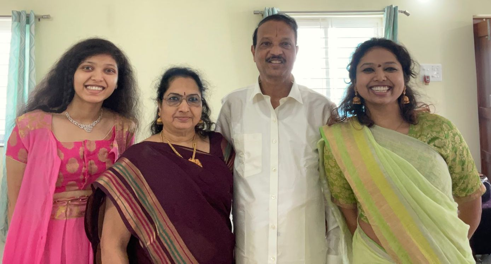

Here's more information about me and my astronomy journey.
General Research Interests and Motivation
My research interests mostly involve the early Universe and the origins of stars, dust, metals, etc. I am fascinated by how different the Universe is now compared to just a few billion years ago. So, my motivation for astrophysics research comes from my curiosity about how galaxies evolved between these two epochs - what conditions had to change and by how much for this transformation to occur.
In simple terms, what makes the Universe tick?
Here's a link to my CV.
Life before Astronomy
I grew up mostly in the southern part of India. I loved astronomy as a kid - I watched all the astronomy documentaries on TV, cut out astronomy related articles in the newspaper, and even participated in NASA's lunar outpost design challenge in 2006.
None of my friends and no one in my entire extended family had studied or even had a passing interest in astronomy. To this day, my sister is the only person who shares my enthusiasm for the subject. Consequently, information on how to build a career in astronomy was hard to come by for us pre-internet era kids.
My sister studied law, and I took and failed the exam for the Indian Institute of Space Technology. Looking back, I'm glad I failed because I am not too keen on building satellites. But since I didn't know that studying Astrophysics was even possible, I went to college for the more "practical" degree of Mechanical Engineering.
In 2015, I earned my Bachelor's degree from the prestigious Indian Institute of Technology at Kharagpur, but I still could not let go of my dream to become an astronomer. Lucky for me, my parents encouraged me to do follow these dreams, no matter how difficult, impractical, or expensive.
So I moved all the way to Austin, Texas, and began my second bachelor's degree - this time, finally, in Astronomy.
University of Texas at Austin
I studied Astronomy at the University of Texas at Austin beginning in January 2016. I received my Bachelor's degree in Astronomy in December 2018.
I worked with Dr. Caitlin Casey. We studied multiplicity in sources observed with the SCUBA2 instrument, when the same sources were observed with the ALMA telescope.
I also worked for a short while with Dr. Volker Bromm on a theoretical project about dark matter.
The Cosmic DAWN Center
I am currently a PhD student at the Cosmic DAWN Center at the University of Copenhagen in Denmark. I work with Dr. Darach Watson on the gravitationally lensed galaxy A1689-zD1. This galaxy lived in the very early Universe, a mere 800 million years after the Big Bang.
I also worked with Dr. Gabriel Brammer, who co-supervised my Masters' thesis, which I defended in August 2021. My Masters' project involved studying some enigmatic bright and compact objects in the Hubble archival data.
European Southern Observatory
In early 2022, I spent three months at the European Southern Observatory in Garching, a 20 minute train ride away from the beautiful city of Münich in Germany.
I worked with Dr. Gergö Popping and Dr. Michele Ginolfi on characterizing the spatial offsets among emissions at various wavelengths from "normal" galaxies that lived between 1 and 1.5 billion years after the Big Bang.